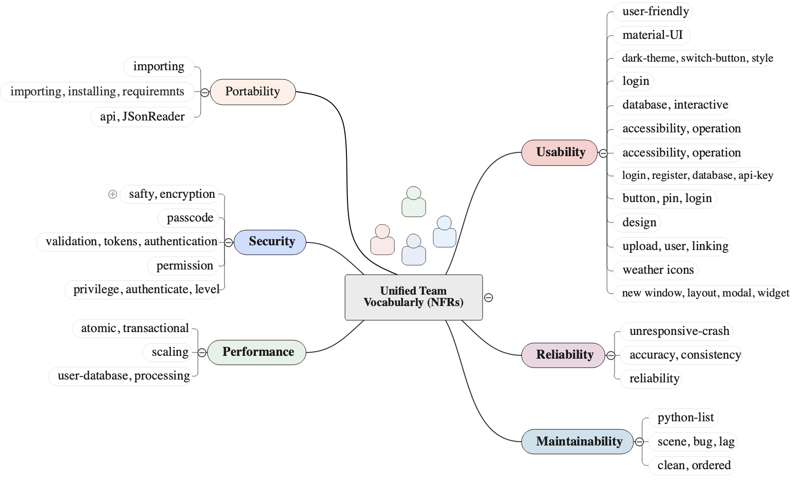

Towards Integration of Team Vocabulary for Demarcating Requirements
Project Description. For any software to function properly, it must conform to requirements. Formally, requirements analysts prepare conformance templates as effective tools for writing requirements in an unambiguous natural language. Such templates impose some constraints in terms of how non-functional requirements (NFRs) and functional requirements (FRs) must be defined and categorized. They usually include modal verbs such as 'shall' and 'will' and are pre-fixed with identifiers. While this demarcation practice works well during the early stages of software development it becomes imperceptible during implementation and maintenance when non-functional requirements get interwoven with functional requirements. This situation indirectly affects software maintainability, software reuse, and the cost of code changes. Central impediment causing this issue is poor and inadequate usage of keyword vocabulary that developers and teams use in centralized settings. In this work, we bring forth our experience and the notion of 'team vocabulary' through an exploratory case study performed in a classroom setting with 30 students enrolled in a software engineering course offered at the University of North Texas. The aim of this study is to explore how teams working in collaborative projects build abstractions and establish NFR and FR vocabularies. We then explore the behavioral strategies teams employ to build such vocabularies. Finally, we explore lexical patterns from the constructed vocabularies that likely can be useful to delineate non-functional requirements from functional requirements and their integration during maintenance tasks. Specifically, we collect students' feedback during a 3-Step Maintenance Activity: (1) perfective maintenance, (2) corrective maintenance, and (3) preventive maintenance. We focus on the maintenance aspect because the vaguely defined requirements are most likely to emerge during the implementation level and team collaborations commonly are more intensive during implementation and maintenance tasks. The results reveal that students employ eight strategies that yield to the creation of NFR/FR vocabularies. We also discover lexical patterns and ontology relations between keywords that represent such vocabularies that aid requirements demarcation.
